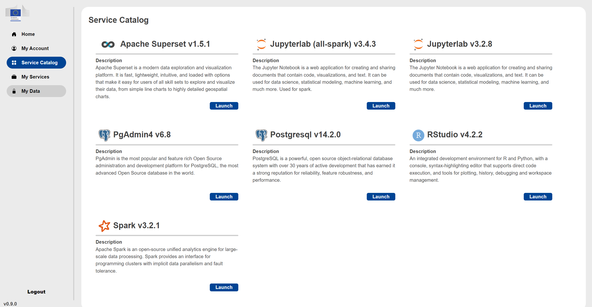

Cloud agnostic datalab
Contents
Cloud agnostic datalab#
The Cloud Agnostic Datalab is a web service to easily deploy and use containerized data science services like JupyterLab, Rstudio, Spark, Superset and PostgreSQL. It is the main service provided for the hackathon.
Typical use case
It can be used if you want to read data from S3 buckets (with programmatic access) and do some data processing with R/Python/Spark and finally you can create a specific data view, push it to PostgreSQL database and create a custom dashboard with Superset.
The The Cloud Agnostic Datalab is available under this address: The address will be provided here on 2nd March
Login#
For access to the service you have to click on the EC DataPlatform Azure AD.

There you have to use the provided Azure AD login credentials which you received previously and activated with MFA.

Home#
After successful login you arrive at the home screen of the Cloud Agnostic Datalab.
Here you can find a link to this documentation and the terms of use of these services. Please read it at least once, because by using these services you agree those terms.
My Account#
Under the My Account you find your Azure AD identifier, your name, your email which is used in the MS Teams group and where you receive the information about your Azure AD account activation. In addition, you will find here the use of resources for your Data Science Lab (DSL) available for your group.

Service Catalog#
Under the Service Catalog you find the available services you can launch.

You can choose from the following services:
Apache Airflow v1.6.0
For the Airflow configuration you have to provide:
the name
if it is shared or private
the DSL of your group - there is only one possibility for your group
you have to select the configuration - the Default gives you predefined resources, for the Custom you can change some of them if the default does not work for you
you can change the provided username
you have to select the storage (NFS PVC name) - there is only one possibility for your group
Apache Superset v1.0
For the Superset configuration you have to provide:
the name
if it is shared or private
the DSL of your group - there is only one possibility for your group
you have to select the configuration - the Micro gives you predefined resources, for the Custom you can change some of them if the default does not work for you
you have to provide an admin username
you have to provide an admin email, first name and last name
Jupyterlab (Spark) v3.4.2
For the Jupyterlab (Spark) configuration you have to provide:
the name
if it is shared or private
the DSL of your group - there is only one possibility for your group
you have to select the configuration - the Default gives you predefined resources, for the Git the Jupyterlab has pre-installed git extension
you have to select the storage (NFS PVC name) - there is only one possibility for your group
Jupyterlab v3.2.8
For the Jupyterlab configuration you have to provide:
the name
if it is shared or private
the DSL of your group - there is only one possibility for your group
you have to select the configuration - the Micro gives you predefined resources, for the Custom you can change some of them if the default does not work for you
you have to select the storage (NFS PVC name) - there is only one possibility for your group
PgAdmin v6.8
For the PgAdmin configuration you have to provide:
the name
if it is shared or private
the DSL of your group - there is only one possibility for your group
you have to select the configuration - the Default gives you predefined resources
you have to provide an admin email
PostgreSQL v14.2.0
For the PostgreSQL configuration you have to provide:
the name
if it is shared or private
the DSL of your group - there is only one possibility for your group
you have to select the configuration - the Micro gives you predefined resources
RStudio v4.2.2
For the RStudio configuration you have to provide:
the name
if it is shared or private
the DSL of your group - there is only one possibility for your group
you have to select the configuration - the Custom allows you to change some of the resources if the default values does not work for you
you have to select the storage (NFS PVC name) - there is only one possibility for your group
Apache Spark v3.2.1
For the Spark configuration you have to provide:
the name
if it is shared or private
the DSL of your group - there is only one possibility for your group
you have to select the configuration - the Default gives you predefined resources, for the Custom you can change some of them if the default does not work for you
you have to provide a username
My Services#
Under the My Services you will find the list of services you launched.

After the launch of a service it will have a status PENDING. A few minutes later refreshing the page the status should change to ACTIVE and the link to Open (or Copy for PostgreSQL) should show up in the last column. Clicking on the Open button the service will open in a new website.
My Data#
Limitations#
Deployment configuration cannot be changed after its launch
Manually updating a secret automatically generated at the instance deployment
Each service is provided with a specific service’s version
Don’t update services’ version manually/from the UI
No root access for JupyterLab and R-Studio
Some libraries will need to be installed by the user
Simultaneous access to shared services is limited
The storage quota of the DSL is not validated against its limits